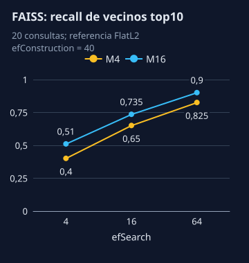
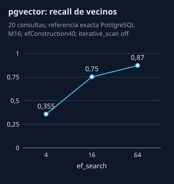
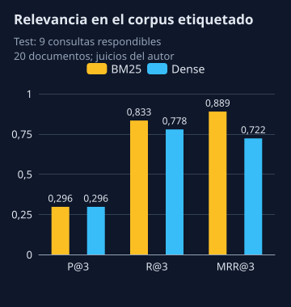

Geometría e índices vectoriales
Compara geometría, vecinos de FAISS y pgvector, relevancia etiquetada y tiempos guardados. El control 2D usa vectores didácticos; las parejas reales conservan 384 dimensiones. El visor no ejecuta modelos ni consulta un servidor de búsqueda.
Cargando datos conservados…
Longitud, dirección y distancia
Estos vectores se eligen para entender las fórmulas; no son una proyección de los embeddings del encoder. La circunferencia discontinua tiene radio uno.
| Medida | Originales | Unitarios float32 |
|---|
Escalar a por una cantidad positiva cambia dot product y L2. Cosine conserva la dirección. Normalizar modifica la longitud; puede cambiar un ranking L2 sobre los vectores originales.
Comparar una consulta con un documento
Los vectores completos tienen 384 componentes. No se representan en el dibujo 2D anterior. La relevancia procede de etiquetas sintéticas del autor y se muestra separada de la similitud.
| Medida | Valor |
|---|
Componentes, sin ocultar dimensiones
Cada fila conserva una posición. La suma de productos unitarios aproxima cosine bajo el redondeo float32. Un score no es una probabilidad. La pantalla redondea a nueve decimales; el cálculo conserva los valores completos.
Desplaza esta tabla para ver todas las columnas y recorrer las 384 posiciones.
| Dimensión | Consulta original | Documento original | Producto unitario |
|---|
Referencia exacta y salidas HNSW guardadas
Replay de mil vectores realmente codificados. No ejecuta FAISS ni reconstruye el grafo. El recall compara IDs del top10 con FlatL2; no mide relevancia semántica de los 980 controles sin etiquetas.
FlatL2 de referencia
| Posición | ID | L2² | En selección |
|---|
Salida seleccionada
| Posición | ID | L2² | En referencia |
|---|
Datos de construcción y tiempos agregados de la estrategia
initialEfSearch es el valor al serializar antes de las consultas; el presupuesto de consulta corresponde a la estrategia seleccionada.
Los tiempos agregan 600 llamadas de 20 consultas; no son la latencia individual de la consulta seleccionada. Search nativo síncrono, sin encoder ni IPC. No comparar directamente con tiempos de un cliente PostgreSQL.
Promedio de vecinos recuperados

La figura resume las 20 consultas; el diagrama superior cambia con la selección individual. No se muestra una traza interna de visitas.
Código, protocolo y capturas del laboratorio
pgvector: referencia, plan y candidatos
Replay de PostgreSQL 17.11 / pgvector 0.8.7 sobre 1.000 vectores. La referencia exacta pertenece al mismo motor. Distancias cosine, no squared L2. HNSW forzado con enable_seqscan=off e iterative_scan=off. No se midieron filtros.
Top 10 exacto
| Pos. | ID | Cosine distance | Recuperado |
|---|
Salida seleccionada
| Pos. | ID | Cosine distance | En referencia |
|---|
Planes capturados para Q01
Estos planes siempre pertenecen a Q01, aunque selecciones otra consulta. Se compara el plan anterior al índice, el posterior sin forzar y el acceso HNSW elegido. El resumen muestra nodos y filas observadas, no costes estimados.
Planes originales completos de Q01
Resumen agregado del cliente, 600 peticiones

Relevancia: BM25 y dense sobre 20 documentos
Juicios binarios del autor, etiquetas conocidas y corpus sintético. Sin HNSW ni 980 controles adicionales. El score pertenece a cada método y no es una probabilidad.
| Pos. | ID | Score del método | Relevante |
|---|
Macro average de respondibles en esta partición

Mediciones: cada ámbito conserva su reloj
Datos guardados, sin ejecutar búsquedas nuevas. Son peticiones secuenciales sobre 20 consultas repetidas. La curva ordena tiempos; no es una cronología ni una predicción bajo concurrencia.
Rondas y tiempos individuales
| Ronda desde 0 | Consulta | Tiempo ms |
|---|